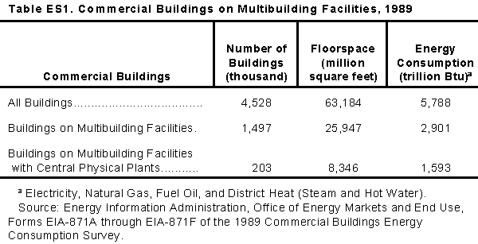

Overview
Percent of Buildings, Floorspace, and Consumption in Multibuilding
Facilities, 1989

Source: Energy Information
Administration, Office of Energy Markets and End Use, Forms EIA-871A through F of the 1989
Commercial Buildings Energy Consumption Survey.

Executive Summary
The purpose of this report is to address a known problem in the Energy Information
Administration∆s (EIA) data systems regarding energy consumption in buildings. The problem is
in measuring the consumption of energy in a particular building that is located within a
multibuilding facility that utilizes district heating and/or cooling. When such a building is
surveyed by EIA, total energy use for that particular building is normally not measured and can
only be estimated from related information that is provided for the multibuilding facility as a
whole. Since a facility usually includes a wide variety of building types with differing heating
and/or cooling requirements, the estimation procedures are subject to error. This then adversely
affects the quality of the energy consumption estimates that are made for the surveyed
building.
The 1989 Facility Survey, an adjunct to the 1989 Commercial Buildings Energy Consumption
Survey (CBECS), was targeted at multibuilding facilities with central physical plants. The
Facility Survey was intended to determine the best way to collect information on district heating
and cooling for commercial buildings. The total energy delivered in the form of district heat to
commercial buildings is of the same magnitude as the total energy delivered from fuel oil.
Roughly three-quarters of the commercial floorspace with district heating or cooling receives
that district heating or cooling, not from a utility, but from a central physical plant located on the
same facility.
The two main objectives of the Facility Survey were:
- to improve CBECS estimates of district heat consumption for commercial buildings that
lacked individual metering, and
- to estimate primary fuel consumption by central physical plants that provide energy to
commercial buildings.
In terms of these main objectives, the 1989 Facility Survey was largely unsuccessful. Cases
lacking building-level data tended also to lack facility-level output data. Accurate estimates of
primary fuel consumption by central plants could not be produced due to the widespread
inability of respondents to provide good data, the small sample size (361 eligible facilities, of
which 124 did not respond), and the considerable amount of inherent variation of the
population.
However, the Facility Survey was successful at discovering the characteristics of these
multibuilding facilities.
Key Findings
- In 1989, one-third of all commercial buildings (1.5 million buildings) and 41 percent of all
commercial floorspace (26 billion square feet) were located on multibuilding facilities (with or
without central physical plants) (Table ES1).
- Although only 4 percent of all commercial buildings were located on multibuilding facilities
with central physical plants, these buildings accounted for 13 percent of all commercial
floorspace and 28 percent of all commercial buildings energy consumption in 1989.
These findings demonstrate the importance of multibuilding facilities for the analysis of energy
consumption in commercial buildings. In particular, commercial buildings located on
multibuilding facilities with central physical plants tend to be considerably larger than
commercial buildings in general, and tend to be either engaged in energy-intensive activities
such as health care, or associated with industrial activities. By CBECS definition, commercial
buildings can have up to 49 percent of their floorspace devoted to noncommercial use, so that
predominantly commercial buildings on industrial facilities may include significant amounts of
manufacturing energy use. District heat energy may also be overstated if consumption reported
to CBECS includes energy transmission losses between the central physical plant and the
sampled buildings.

Characteristics of Facilities
What are the multibuilding facilities?
- The types of multibuilding facilities with the most commercial floorspace were colleges,
universities and other schools, office complexes, shopping centers and malls, hospitals, industrial
facilities, and warehouses. Each of these types of facilities contained over 2 billion square feet of
commercial floorspace in 1989.
- A total of 2.5 billion square feet of commercial floorspace, including 1.0 billion square feet
of warehouses and 741 million square feet of offices, was located on industrial facilities.
- Government (local, State, and Federal) owned 35 percent of the floorspace on multibuilding
facilities (9.0 billion square feet). Government buildings consisted primarily of colleges and
universities (2.2 billion square feet), other schools (2.8 billion square feet), and offices (1.2
billion square feet).
What types of multibuilding facilities are more likely to have central physical plants?
- Eighty-three percent of the college and university floorspace was located on facilities with
central plants. In contrast, only 21 percent of the "other schools" floorspace (mainly elementary
and secondary schools) was located on such facilities.
- Among hospitals, 79 percent of the commercial floorspace was located on facilities with
central plants.
- Slightly more than half (52 percent) of the commercial floorspace on industrial facilities was
located on facilities with central plants.
- Warehouse facilities, shopping centers and malls, religious facilities, entertainment
complexes, and hotels and motels were unlikely to have central physical plants.
What are the characteristics of multibuilding facilities with central physical plants?
- In 1989, there were about 30,000 multibuilding facilities with central physical plants and at
least one commercial building. These facilities contained 12 billion square feet of floorspace.
- Overall, 61 percent of the floorspace on facilities consisted of commercial buildings. By
sector, 92 percent of the floorspace on commercial facilities, and 21 percent of the floorspace on
industrial facilities, was contained in commercial buildings.
- The mean floorspace per facility was 395,000 square feet. Among commercial facilities the
largest were colleges and universities (1,393,000 square feet); the smallest were other schools
(114,000 square feet). Industrial facilities averaged 298,000 square feet.
can be estimated that 0.8 quadrillion Btu of
primary energy would have been required to produce the 0.5 quadrillion Btu of district heat
consumed by commercial buildings on multibuilding facilities in 1989.
Energy Outputs and Inputs
What are energy outputs produced by the central physical plants?
- Of the facilities with central plants, 75 percent produced steam, while 25 percent produced hot water, 18 percent produced chilled water, and 24 percent reported electricity generation. (However, the incidence of electricity generation was probably overstated.)
- Sixty-seven percent of the central plants on commercial facilities produced steam, 32 percent produced hot water, and 33 percent produced chilled water.
- The commercial sector accounted for 75 percent of all chilled water plants, but only 20 percent of all plants reporting electricity generation.
- Central physical plants produced 3.8 quadrillion Btu of output in 1989, which consisted primarily of steam (79 percent of the total).
- Although commercial sector central plants produced less than 20 percent of the overall total, they produced 68 percent of the hot water and 78 percent of the chilled water.
What types of energy are used as inputs by the central physical plants?
- Natural gas, used at 64 percent of the central plants, was the most common energy input. Fuel oil and electricity were each used at about half of the central plants
- Thirty-one percent of all facilities used both fuel oil and natural gas. This overlap in fuel use may reflect either separate equipment or equipment with dual fuel capability.
- Some regional differences were evident. Seventy percent of the commercial plants in the Northeast used fuel oil, while 99 percent of the plants in the Midwest used natural gas.
- Total inputs to central plants were estimated at 5.8 quadrillion Btu, 32 percent of which was natural gas. The commercial sector physical plants accounted for 1.2 quadrillion Btu, 50 percent in the form of natural gas.
- The overall ratio of energy output (3.8 quadrillion Btu) to energy input (5.8 quadrillion Btu) was 0.66.
- Based on 0.66 as the ratio of outputs to inputs, it
Apart from particular findings, the 1989 Facility Survey also raised awareness of the importance
of multibuilding facilities in general. To the extent that the facility, rather than the individual
building, coincides with the economic decision-making unit, facilities represent a fruitful area
for future work on conservation and energy management.
View and/or Print Full Report


File Last Modified: April 9, 1997
- Contact:
- alan.swenson@eia.doe.gov
- Alan Swenson
-
- Joelle Michaels
- joelle.michaels@eia.doe.gov
- CBECS Manager
-
URL: http://www.eia.gov/consumption/commercial/data/archive/cbecs/cbecs2i.html
If you are having any technical problems with this site, please contact the EIA Webmaster at
wmaster@eia.doe.gov
|